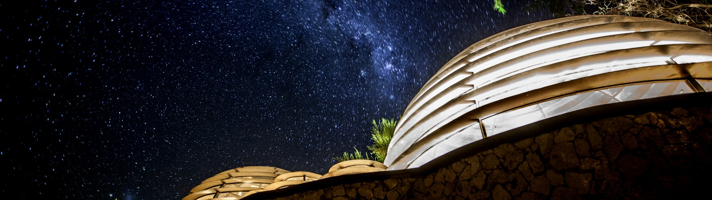

Astroturismo
Tenemos el cielo más claro del mundo. Reserva un tour o una visita en alguno de los observatorios cercanos y descubre la Vía Láctea, planetas y estrellas fugaces a simple vista.

El entorno
Pisco Elqui está a unos 1.300 m de altura, rodeado por la Cordillera de los Andes. Hay opciones para todos: descanso, deporte, cultura, astronomía, gastronomía y vida nocturna.
Tenemos el cielo más claro del mundo. Reserva un tour o una visita en alguno de los observatorios cercanos y descubre la Vía Láctea, planetas y estrellas fugaces a simple vista.
Visita la Pisquera Mistral en pleno Pisco Elqui o la histórica Pisquera Los Nichos, a unos 2 km en dirección a Horcón. Degustaciones y recorridos por la tradición del valle.
Explora la naturaleza espectacular del valle a caballo, en bicicleta o caminando por los cerros. Descubre los pueblos de Horcón y Alcohuaz, al fin del valle, o el vecino valle de Cochiguaz.
En el pueblo de Montegrande se encuentran la tumba y el museo de la famosa poetisa chilena y Premio Nobel de Literatura, Gabriela Mistral. Un imperdible cultural del valle.
Varios pubs y restaurantes con la gastronomía típica del valle. Por las noches, disfruta de bandas locales e invitados nacionales, y de una entretenida vida nocturna.
Relájate leyendo un libro junto a la piscina o disfruta de tratamientos alternativos: una sesión de tarot o de runas, o un masaje relajante para desconectar por completo.